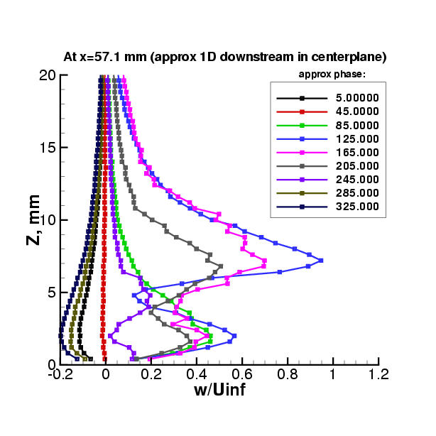

|
Public Access (formerly Langley Research Center)Turbulence Modeling Resource |
Exp: CFDVAL2004 Case 2 Experimental Data
Return to: CFDVAL2004 Case 2 - Intro Page
Return to: CFDVAL2004 - Intro Page Return to: Data from Experiments - Intro Page Return to: Turbulence Modeling Resource Home Page
Using LDV, phase-averaged experimental data for Case 2 are available in the
following files: These two files give the same data in two different ways. The data include the following:
Using LDV, long-time-averaged experimental data for Case 2 are available in the following file:
These data include the following:
Using 2D-PIV and Stereo-PIV, both phase averaged and long-time-averaged experimental data for Case 2 are available in the following file:
These data include the following:
Note: The Stereo-PIV (SDPIV) data is included here in the interest of completeness, as they represent the only data currently available in the spanwise direction. The out-of-plane component (u) is consistent with the other measurement techniques, but the in-plane components (v and w) are not. Therefore, any analysis involving the in-plane components from the SDPIV experiment should take this inconsistency into account.
Note: Case 2 experimental data are being reported in the following coordinate system: x-direction downstream, z-direction up, y-direction spanwise. The coordinate system's origin (0,0,0) is on the tunnel splitter plate, 8 diameters (0.0508 m) directly upstream of the center of the orifice (the orifice diameter is 0.25 inches = 0.00635 m).
Sample plots (from LDV) of phase-averaged u and w velocity at approximately 1D downstream of the center of the orifice:
|
 |
Sample plots (from LDV) of phase-averaged u and w velocity just above the orifice along x at z=0.4 mm, y=0:
Sample plots (from LDV) of long-time-averaged u and w velocity at three x-stations:
Return to: CFDVAL2004 Case 2 - Intro Page
Return to: CFDVAL2004 - Intro Page Return to: Data from Experiments - Intro Page Return to: Turbulence Modeling Resource Home Page
Page Curators: Christopher Rumsey,
Ethan Vogel,
Clark Pederson
Last Updated: 05/15/2021